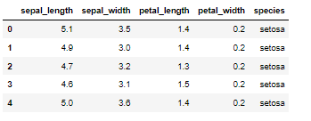
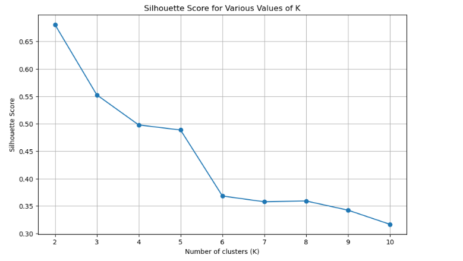
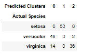

✥ Unit 6: Clustering with Python
Outcomes from the Team Exercises and activites
K-Means is an iterative clustering algorithm that aims to partition a dataset into K distinct, non-overlapping subsets (or clusters). The goal is to minimize the within-cluster variances and maximize the between-cluster variances.
In other words, the K-means method is designed to partition two-way, two-mode data (that is, N objects each having measurements on P variables) into K classes (C1, C2, ::: ,CK), where Ck is the set of nk objects in cluster k, and K is given (Steinley, 2006).
Algorithm Process (MacQueen 1967)
- Initialization: Select K cluster centres (centroids) from the outset. You can use a heuristic or choose to do this at random.
- Assigning: Put every data point in relation to the closest centroid. Thus, K clusters are formed.
- Update: Determine each cluster's average point position by taking the mean of all the points and moving the centroid there.
- Convergence: The algorithm has reached its point of convergence when steps 2 and 3 are repeated until the centroids no longer fluctuate noticeably.
Python's Scikit-Learn library provides an easy-to-use implementation of the K-Means algorithm.
Important Considerations (Lloyd, 1982)
- Scaling features is critical so that one trait does not dominate the grouping owing to its higher scale.
- Choosing K: Use methods such as the Elbow method, which plots variance as a function of cluster number. The curve's "elbow" reflects an ideal value for K (a trade-off between accuracy and computing expense).
- Multiple Initializations: Run the algorithm with different initializations several times and select the best result.
ACTIVITY: TASK A
Perform K-Means clustering on the dataset, iris.csv (from the UCI Machine Learning Repository). Before using the data for clustering, you might have to remove a few columns because the K-Means algorithm involves the calculation of Euclidian distance. You can choose various values of K; however, you must also choose K = 3 in this case. Upon clustering at K = 3, check how much similar your three clusters are as compared to the labels of species – setosa, versicolour, and verginica.
1. Inspection of Dataset:
Firstly, the dataset is loaded, and its first few rows are inspected.
The dataset contains the following columns:
- sepal_length
- sepal_width
- petal_length
- petal_width
- species
2. Data Preparation:
The first four columns are numeric and suitable for clustering. The last column, species, contains the labels that we can use to compare the clustering results. Thus, we drop the last column.
3. K-Means Clustering:
We'll perform K-Means clustering for a range of K values and compute the silhouette score for each value.
The silhouette scores for various values of K are as follows:
| K Value | Silhouette Score |
|---|---|
| 1 | 0.6808 |
| 2 | 0.5526 |
| 3 | 0.4978 |
| 4 | 0.4885 |
| 5 | 0.3682 |
| 6 | 0.3577 |
| 7 | 0.3591 |
| 8 | 0.3424 |
| 9 | 0.3166 |
4. Silhouette Score Visualization:
Then, we'll visualize the silhouette scores to determine the optimal number of clusters.
K=2 has the greatest silhouette score, as can be seen from the plot of silhouette scores for different values of K. K=3, on the other hand, is still a logical option and is not far behind, particularly considering the iris dataset's three unique species.
In conclusion, K=3 is better in line with the dataset's natural structure and our past understanding of the iris species, even if K=2 offers the greatest silhouette score. This highlights how crucial it is to comprehend the data and have subject expertise when making judgements based on clustering results.
5. Clustering with K=3:
Thus, the K-Means clustering is used on the dataset for K=3.
6. Cross-tabulation:
Then, a cross-tabulation or confusion matrix between the predicted clusters and the actual species labels is created. This is to compare the clusters to the given species labels to see how closely the clustering matches the actual species categories.
The following findings are obtained from the cross-tabulation of the actual species and the anticipated clusters:
- It is accurate to classify all 50 of the setosa species samples into cluster 1.
- Two samples are sorted into cluster 2 and 48 samples are placed into cluster 0 for the versicolor species.
- Thirteen samples are placed in cluster 0 for the virginica species, while thirty-six samples are placed in cluster 2.
- For the setosa species, the grouping appears to function well overall, but there is considerable overlap with versicolor and virginica.
Reflection:
K-Means clustering is more than a simple algorithm. Its real-world applications are extensive and significant, encompassing a wide range of sectors. Mastering K-Means means having a flexible tool at their disposal that can extract insights from data, improve machine learning models, and solve practical business issues. As businesses and organisations continue to rely on data-driven decision-making, K-Means and its applications in real life will become increasingly important.
References:
- Steinley, Douglas. (2006) ‘K‐means clustering: A half‐century synthesis’, British Journal of Mathematical and Statistical Psychology, 59(1), pp. 1–34. doi:10.1348/000711005x48266.
- MacQueen, J.B. (1967) Some Methods for Classification and Analysis of Multivariate Observations. In: Proceedings of the 5th Berkeley Symposium on Mathematical Statistics and Probability, Volume 1: Statistics, University of California Press, Berkeley, 281-297.
- Lloyd, S. (1982) ‘Least squares quantization in PCM’, IEEE Transactions on Information Theory, 28(2), pp. 129–137. doi:10.1109/tit.1982.1056489.
- Pedregosa, F. et al. (1970) Scikit-Learn: Machine learning in Python, Journal of Machine Learning Research. Available at: https://jmlr.csail.mit.edu/papers/v12/pedregosa11a.html (Accessed: 19 October 2023).